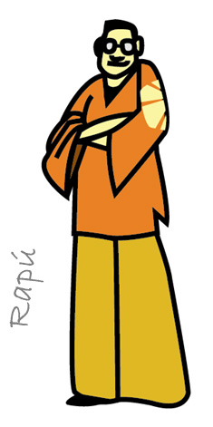
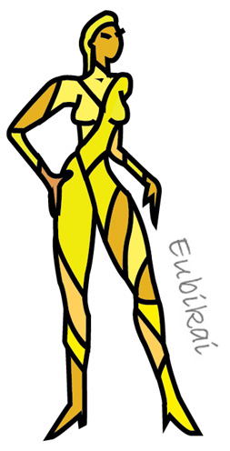
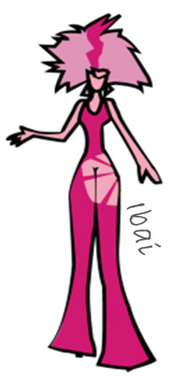
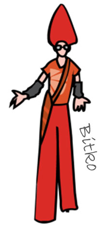
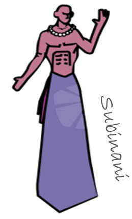
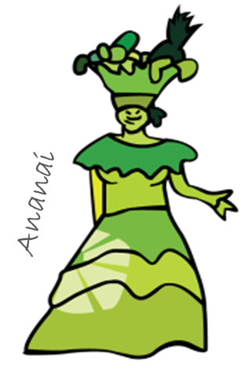

VII CONGRESO LATINOAMERICANO DE MODA CARTAGENA COLOMBIA
HOTEL LAS AMÉRICAS 16, 17 Y 18 DE MARZO DE 2015
HOTEL LAS AMÉRICAS 16, 17 Y 18 DE MARZO DE 2015
IXEL MODA es una marca creada bajo parámetros de comunicación multi-sensorial, asociada al diseño con énfasis en el universo vestimentario. La marca encierra estilos de vida, desarrollos creativos e innovación.
El principal producto de la marca es el CONGRESO LATINOAMERICANO DE MODA ; sin embargo, de manera paralela al congreso, el equipo creativo y ejecutivo de la marca, trabaja durante todo el año en programas de capacitación, consultorías y publicaciones relacionadas con la industria.
+ ver más
Ixel Moda es una marca creada bajo parámetros de comunicación multi-sensorial, basada en experiencias asociadas a la moda dentro del universo vestimentario y las distintas disciplinas del diseño coexistentes. Su concepto enmarca estilos de vida, desarrollos creativos e innovación. Además del Congreso Latinoamericano de Moda, espacio creado como encuentro entre la academia y el círculo productivo que reúne anualmente a toda la industria de la moda; Ixel trabaja en programas de capacitación, consultorías y publicaciones relacionados con el sector.
La marca busca crear, a través de la moda y el diseño, un importante instrumento para la integración y el intercambio académico, comercial y cultural entre los pueblos americanos.
Identidad.
La marca se percibe simple y alegre; combina colores radiantes; sabe a limonada de coco y ron; huele a brisa de mar y a fruta fresca; suena en tonos altos, suena a tambores, suena a latín Jazz y fusión; tiene un estilo casual contemporáneo con sutiles toques étnicos; demuestra fuerza creativa; y sí fuera un verbo sería unir.
El logosímbolo.
El logosímbolo de IXEL está compuesto por la imagen de un sol con rayos de siete colores que representan al arcoiris.
El concepto.
Desarrollado en torno a la marca, el concepto propone imágenes llenas de color y espacios multi-sensoriales donde cobran vida esas historias propias de la cultura latina para hacer de un contexto académico un escenario lúdico, lleno de magia y fascinación, en el marco de una ciudad tan seductora como Cartagena de Indias.
El nombre.
El congreso toma su nombre inspirado en las míticas historias que se entretejen en el Caribe y que hacen parte de esa pasión y embrujo latino.
La leyenda “Ixel”
“Cuenta una antigua leyenda que en tiempos de nuestros aborígenes existió en honor a la diosa ICXEL, señora de los textiles, el arcoiris y la fertilidad, una pequeña tribu llamada IXEL. Se dice que la diosa pidió al gran Sol MAJAUA que, junto a sus siete hijos, custodiara sus tierras y cuidara de sus habitantes.
Cada uno de los siete hermanos: Ciroi, Aananai, Rapú, Ibai, Bitko, Eubikai y Subinani, tenía un don especial pero su padre sabía que solo unidos podían proteger a la tribu. Una noche, para probar a sus hijos, MAJAUA desató una gran tormenta que amenazaba con arruinar cosechas y desterrar a animales; en efecto, solo al juntar sus poderes los hermanos lograron que MAJAUA apartara con un rayo las nubes que cubrían el cielo. Aquel rayo tomó a los 7 hermanos y los elevó hasta perderse en el cielo desde donde, junto a MAJAUA, protegen a su pueblo.
A partir de ese entonces, entre las tribus más antiguas de Centro y Sur América se habla de IXEL, y en las alturas cuando hay renovación de cosecha, un arcoiris circular rodea a MAJAUA como señal de integración, paz, prosperidad y alegría.”
Los dioses.
Ciroi, dios de la caza, siempre en busca del alimento para su pueblo. Esta figura se vuelve anfitrión del CONGRESO ACADÉMICO donde converge la investigación y se reúnen catedráticos y docentes

Rapú, este mítico personaje simboliza el equilibrio y la unión; y es así como se convierte en espacio para el FORO SECTORIAL.
Eubikai, diosa de la pasión, la armonía y el diseño representa las pasarelas de diseñadores consagrados y emergentes: IXEL COLOMBIA e IXEL INTERNACIONAL
Ibai, diosa de la creatividad y la transformación. Viste la exhibición de proyectos de innovación y emprendimiento así como la Pasarela IXEL ESTUDIANTIL.
Bitko, el dios que reseña, comunica a su pueblo, escribe las memorias y deja trazada la historia. Este personaje se hace presente en la SALA DE PRENSA, en los PREMIOS DE LA REVISTA INFASHION y acompaña a los medios de comunicación que asisten al evento.
Subinani, el dios de los frutos de la tierra, la naturaleza y la habilidad manual. Este dios escenifica al artesano y señala el SALÓN ARTESANAL
Ananai, representa la fiesta luego de la cosecha, es la más divertida de los dioses;. reina en los escenarios para el esparcimiento y señaliza las AREAS SOCIALES Y COMERCIALES del congreso.

IXEL MODA
…es el único congreso del Universo Vestimentario en América
… punto de integración para toda la industria de la moda
… espacio de encuentro entre la academia y el círculo productivo
Por edición, se inscriben cerca de 1.000 personas en la agenda académica:
docentes, catedráticos e investigadores;
estudiantes; empresarios, profesionales;
prensa especializada, productores de moda, fotógrafos;
representantes de gremios y entidades promotoras del sector
El congreso ofrece a sus asistentes herramientas para desarrollar competencias de cara a los nuevos escenarios de productividad y competitividad, fomentando la cultura del emprendimiento y el empleo desde el sector creativo dentro de un marco de sustentabilidad.
De otra parte, asisten en promedio unos 10.000 invitados a pasarelas y eventos culturales
fashionistas
celebridades del la farándula y el Jet Set
políticos, periodistas de entretenimiento y cultura
empresarios y personalidades del mundo social en Cartagena
Ixel cuenta con un amplio cubrimiento en los principales medios de comunicación nacional y destacadas reseñas en la prensa internacional; logrando a la fecha más de 3.200 notas publicadas y el registro de unos 520 blogs especializados en Colombia y en Latinoamérica, superando los 12.000 millones de pesos en free press durante estos últimos 6 años.
+ ver más
IXEL surgió como respuesta a las necesidades encontradas dentro del cluster del universo vestimentario luego de hacer un cuidadoso estudio de mercado en Colombia durante el año 2007.
Es una iniciativa del sector privado en alianza con la Cámara de Comercio de Cartagena y con el respaldo de la Gobernación del Departamento de Bolívar y la Alcaldía Mayor de Cartagena de Indias. Cuenta con el apoyo de los ministerios colombianos de Educación Nacional y Comercio Industria y Turismo , Proexport , Fondo Nacional de Turismo y la Corporación de Turismo de Cartagena.
Cada año, el congreso tiene como sede oficial el centro de convenciones del Hotel Las Américas de Cartagena, que es además socio estratégico del evento; su operador es Gema Tours SA y la producción general está a cargo de Image, una firma especializada en diseño de eventos de alto impacto.
Cómo nace la idea.
Luego de trabajar por más de 10 años en el diseño y operación de eventos corporativos, muchos de ellos asociados a la industria de la moda; la empresaria Erika Rohenes inició el proyecto que se convertiría en el primer congreso de Prendas de Vestir en Latinoamérica.
La experiencia de esta colombiana: primero, a cargo del lanzamiento de colecciones de reconocidas diseñadoras de su país como Francesca Miranda y Judy Hazbún; segundo, al frente de la organización de desfiles de marcas como Levis, Girbaud, Diesel, Tommy Hilfiger, Carlos Pinel entre muchos otros; y tercero en la coordinación y producción de las presentación de marcas propias de importante cadenas de almacenes como Súper Almacenes Olímpica y Vivero (ahora Éxito); la llevaron a crear en el año 2004 Plataforma K, evento que organizó en asocio con la Cámara de Comercio de Barranquilla para fortalecer el sector Textil – Confecciones e impulsar a las nuevas figuras del diseño y la moda en la Costa Caribe Colombiana.
Tiempo más tarde, luego de dejar la dirección de Plataforma K, en la que estuvo por más de 2 años; en agosto de 2006, Erika Rohenes logró concebir y estructurar un nuevo proyecto: IXEL MODA. Invitó entonces a Luis Angarita, diseñador industrial colombiano, director de la especialización en Diseño Estratégico e Innovación de la Universidad Pontificia Bolivariana de Medellín y responsable de varios proyectos para empresas en Europa como Philips-Whirlpool, Salvatore Ferragamo, Ferrari, Nestle, Levis, entre otras para que construyera junto a su equipo de diseño en la marca del congreso (nombre, el logosímbolo, manual de imagen y experiencia). De otra parte logró convencer a Danilo Cañizares, profesional en Diseño de Modas, especializado en Gestión del Mercado, Programación Industrial de Colecciones e Investigación de Evolución del Consumidor, para que se encargara de la dirección de los contenidos del congreso quien le ayudó a estructurar la agenda académica y desde entonces ejerce como curador del congreso.
Después de 18 meses de preparación de la mano de la Cámara de Comercio de Cartagena, en febrero de 2008 se realizó por primera vez el congreso del Macro Sector Prendas de Vestir instituyendo a Cartagena de Indias, como su sede oficial.
Por qué un congreso.
Fueron 2 las preocupaciones que motivaron la creación de un congreso; la primera, la preparación de empresarios y profesionales de la industria de la moda y la segunda, el poco vínculo existente entre la academia y el sector productivo. Es claro que el trabajo debe ser mancomunado: academia, sector productivo y gobierno, de allí la importancia de un espacio de encuentro y disertación.
Los empresarios tienen hoy por hoy un sin fin de posibilidades para abrir nuevos mercados a través de decenas de ferias alrededor del mundo, algunas más exigentes que otras. Las que existen en Latinoamérica alcanzan a atender las necesidades que en este sentido tienen los empresarios. El problema no radica en la falta de medios comerciales como en el no saber aprovecharlos.
En Colombia, por ejemplo, el Instituto para la Exportación de la Moda INEXMODA junto a PROEXPORT, ha venido jugando un papel crucial durante los últimos 25 años. Gracias a Colombiatex y Colombiamoda ambas, ferias organizadas por el Instituto y contadas hoy entre las más grandes y significativas de América Latina, muchos de los empresarios tienen la posibilidad de vender al exterior, y a partir de esto, vincularse a otras ferias o ruedas de negocios en el ámbito internacional.
Sin embargo, y a pesar de todos estos importantes esfuerzos y logros, un buen número de empresarios que participan en estas ferias no logran aprovechar las oportunidades como deberían pues carecen muchas veces de las herramientas de información, capacitación y entrenamiento adecuadas para hacerlo.
Pese a esto, la tasa de asistencia a seminarios, talleres y conferencias que se proponen a lo largo del año suele ser bastante baja. Pues bien, se cree que esto está estrechamente ligado al hecho de que las compañías que conforman el sector -la gran mayoría familiares, empíricas y de pequeño o mediano tamaño- en ocasiones prestan más atención “al negocio puntual” que a la estructura empresarial misma por lo que la capacitación pasa entonces a un segundo plano en materia de prioridades. No obstante, con la globalización algunos empresarios han empezado, en la actualidad se hace imprescindible empezar a hacer empresa y no sólo negocios y esta es una convicción que debe generarse desde la academia.
De otra parte, el gran distanciamiento entre la academia y el sector productivo es, sin lugar dudas uno de los principales elementos de disgregación del cluster. Los pensum propuestos por las escuelas poco satisfacen las necesidades puntuales de las empresas por eso la oferta laboral resulta poco atractiva para empleadores. Las expectativas de los jóvenes muchas veces se ven frustradas ante la realidad del mercado empresarial; la gran mayoría se gradúan con el único fin en mente de ser “un diseñador reconocido” olvidando todas las demás alternativas y oportunidades posibles. Los programas están orientados, en su gran mayoría, al tema de producción, inteligencia y arquitectura de colecciones dejando a un lado el mercadeo y comercialización de la producción. No hay claridad en el diagnóstico, las necesidades del mercado no se establecen como prioridad y el diseño de producto termina haciéndose a la medida de quien lo ofrece y no de quien lo demanda.
Todo esto termina por generar serias inquietudes acerca de la orientación de competencias educativas propuestas dentro del plan global.
Es tal vez por esto que Ixel se abre paso en un ambiente propicio para impulsar propuestas encaminadas a capacitar al cluster y concertar sobre temas de interés y políticas de desarrollo en materia educativa y de fortalecimiento empresarial.
Latinoamérica como escenario.
Al hablar de Latinoamérica no nos referimos a un contexto geográfico únicamente, sino también a un conjunto de pueblos y naciones que incluyen una gran diversidad de orígenes, historias, culturas y lenguas pero que confluyen todas en una misma identidad que ha llevado a crear la idea de América Latina como una “patria grande común”
La experiencia de los países de América Latina y el Caribe en un mundo crecientemente globalizado durante la última década muestra que es necesario emprender políticas activas de inserción en la economía mundial; para ello, resulta indispensable aunar esfuerzos y presentar posiciones compartidas ante la comunidad internacional. La formación de bloques regionales y los avances en la integración regional aportarían credibilidad a las posiciones conjuntas. Es así como diferentes sectores de la economía han empezado a trabajar en equipo, y la moda no puede ser la excepción.
“América Latina, ha ido ocupando un lugar cada vez más destacado en este sector, en los últimos años países como Brasil, Argentina y Colombia están consolidando una industria que anualmente emplea a más de 40 millones de personas en el mundo, y que según estimaciones de la Federación Internacional de Sindicatos (Ictfu, por sus siglas en inglés), genera intercambios comerciales superiores a los US$400.000 millones al año.
A paso lento, pero seguro, los países de la región han ido desarrollando este negocio, a través de la creación y exhibición de sus propios diseños, telas y texturas autóctonas; accesorios, joyas y bisutería. Sin embargo, para que una nación pueda potenciar la industria de la moda, es necesario, ante todo, tener consolidadas otras fábricas importantes: textil, calzado y una red de talleres de confección.
Uno de esos ejemplos es Brasil, considerado, hoy por hoy, el principal exponente de la moda regional. Pionero en el ingreso a esta industria, la semana de la moda brasileña es actualmente tan prestigiosa como las europeas. Cada año la tradicional Sao Paulo Fashion Week, que ya lleva 27 ediciones, reúne a más de 100.000 personas, quienes pueden apreciar diseños locales creados, en su mayoría, sobre la basa del cuero vegetal, de lana artesanal, con pigmentos naturales, o algodón orgánico y fibras de bambú, entre otros materiales nacional”(*)
En este sentido, como el congreso, Ixel espera poder reunir dentro de un mismo marco conceptual los criterios de direccionamiento del macro-sector en la región.
(*)Publicado por Araújo Ibarra & Asociados S.A. – COLOMBIA Fuente: América economía 18/09/09
Antecedentes que influyeron en el desarrollo de contenidos propuestos.
Dentro de los dos grandes escenarios planteados: el académico y el empresarial, son tres los focos que ocupan al congreso:
Desarrollo de producto, inteligencia de consumo y mercadeo de moda
Comunicación y periodismo de moda
Política sectorial
Con respecto al primer foco, desarrollo de producto, inteligencia de consumo y mercadeo de moda; encontramos que los procesos de construcción de marca requieren de planes a largo plazo y, por lo tanto, de estrategias acordes. Este punto resulta de especial relevancia en sectores como el de la moda o los productos tecnológicos, los cuales se encuentran sumidos en una dinámica de desarrollo de producto vertiginosa, pero a la vez sujeta a la narrativa de marca.
Los métodos de construcción de escenarios permiten visualizar escenarios alternativos a futuro que facilitan los procesos de construcción de marca, minimizando riesgos y optimizando la inversión en el despliegue de su narrativa.
Existen diversos métodos de construcción de escenarios, enfocados a distintos ámbitos del pensamiento estratégico (entendiendo al diseño dentro de dicho pensamiento) y lapsos de tiempo.
Algunas preguntas que surgen de la construcción de escenarios:
¿Qué nos dicen los comportamientos de consumo actuales de las tendencias a futuro?
¿Qué impacto tendrán determinados factores sobre la forma de producir y consumir?
¿Con qué probabilidad se consolidarán determinadas tendencias presentes?
¿De qué forma puedo minimizar riesgos a la hora de invertir en marca, pero también en infraestructura, tecnología, etc.?
¿Me puedo anticipar al mercado?
La observación detenida de algunos fenómenos del diseño actual aporta claves para la comprensión de diversas tendencias de consumo a futuro.
De otra parte hoy en día entran a jugar un papel mucho más relevante en las propuestas de moda conceptos como la Inteligencia de Consumo de Moda: Diseño Estratégico de Tendencias. Este concepto es uno de los más apreciados modelos de trabajo utilizado en la actualidad tanto para analizar mercados, establecer estrategias de branding así como para formular estrategias de corto, mediano y largo plazo aplicables a productos, campañas, marcas y modelos de negocio. Originadas luego de la 2ª.guerra mundial a partir de las Oficinas de Estilo evolucionaron en los Laboratorios de Tendencias de los años 80s y hoy como Laboratorios de Diseño integrado brindan soluciones precisas vinculando los factores culturales a los modelos de negocio y arquitectura de producto.
Son por tanto muchos los elementos sobre los que hay que trabajar para un desarrollo acertado de productos que puedan competir en mercados globalizados y nuestros empresarios deben conocerlos y manejarlos.
En lo que concierne al segundo foco, comunicación y periodismo de moda; la problemática en el sector ha sido cada vez más evidente. La carencia de programas de educación especializados en comunicación de moda ha obligado a que los medios deleguen el cubrimiento de eventos y actividades de moda en periodistas que generalmente cubren notas de farándula, entretenimiento, actualidad y sociales. Algunos de ellos, por vocación o convicción, se han tomado el tiempo para investigar y estudiar el complejo mundo de la moda, sus connotaciones antropológicas y culturales y sus repercusiones en las funciones psicológicas (emocionales) y sociales (relacionales) del ser humano; unos pocos han tenido la oportunidad de viajar y visitar ferias y semanas de moda internacionales; esto, por supuesto, les ha dado la experiencia que hoy los convierte en “especialistas en moda”. No obstante, siguen siendo muchos los vacios que en materia de comunicación de moda se tienen pues apenas ha empezado a existir academia en este campo.
Por último y en referencia al tercer foco de interés, el de política sectorial, son varios los asuntos que debemos abordar relacionados con el desarrollo interno del sector y sus exportaciones.
Continuando con el ejemplo Colombia, a partir de la apertura economía colombiana en el gobierno del ex presidente Cesar Gaviria, los diferentes mandatarios han ido incluyendo en sus programas de gobierno un plan de trabajo para apoyar cada uno de los sectores de la economía.
El sector textil no es la excepción, por ello hoy hablamos de planes claros de expansión de oportunidades para los industriales que incluyen la extensión del ATPDEA, los tratados de libre comercio con los Estados Unidos, Centroamérica y Comunidad Europea.
Los informes de mercado hablan que debemos fortalecer el desarrollo de marcas propias en vista de que la tendencia mundial es desplazar la mano de obra hacia otros destinos por las dificultades tecnológicas y el costo de mano de obra que tiene este país. Con este panorama es importante determinar cuál es la proyección que como país y región tenemos.
De otra parte, desde el segundo semestre del 2007 se han venido cerrando acuerdos de libre comercio con Centroamérica, la Comunidad Europea y los Estados Unidos. Es importante conocer la adecuada regulación y documentación acerca de los trámites que se requieren para poder llevar a cabo con éxito exportación.
Todos estos son aspectos que se deben tratar una y otra vez por los cambios que suponen.
Objetivos del congreso
Capacitar a los jóvenes empresarios y profesionales (*) en los temas básicos que involucra el macro-sector e incentivar en ellos la búsqueda continua de información, actualización y nuevos estudios.
Inteligencia creativa: conceptos de moda, sensibilidades, perfiles y universos de mercado; industrialización productiva (en proceso creativo y de construcción); arquitectura de colecciones; construcción de tendencias; lectura de consumidores; experiencia de marca (visual merchandising) entre otros.
Marketing y comercialización de moda: análisis, penetración, desarrollo y expansión de mercados; desarrollo de productos y de marcas confrontados a mercados; integración vertical; diversificación; estrategias de consolidación y mezcla de productos; realización, presentación y financiación de proyectos; entre otros.
Comunicación de moda: la semiótica de la moda la moda como sistema de expresión, el look como proceso de expresión, la lógica de la innovación, autoría y relectura, interpretación de looks, los desfiles como estrategia de branding; creación de planes de comunicación; entre otros
Políticas y proyecciones del Macro-Sector, cómo acceder a subsidios, incentivos y beneficios: inversiones en tecnología blanda y dura; recurso humano; leyes tributarias y laborales; planes de exportaciones como una visión ampliada de los negocios; acuerdos internacionales; participación en ferias internacionales y ruedas de negocios; entre otros.
(*) Gerentes generales o de marca; diseñadores, asesores y personas involucradas en el proceso creativo, de manufactura, mercadeo y comercialización de productos de moda.
Concertar necesidades del sector y a partir de ellas promover en las instituciones educativas tanto del sector público como privado:
Pénsums que involucren, de manera integral, la formación creativa y de negocios con énfasis en investigación y desarrollo de mercados.
Dinamización continúa a través de trabajo de campo con marcas y modelos reales tanto en mercados de origen como de destino e intercambio de experiencias, ideas y conceptos con otros países.
Estructuración a escala de los diversos programas académicos ofrecidos en el mercado con base en competencias: básica, tecnológica, técnico-profesional.
Construir escenarios de debate y concertación entre las nuevas generaciones de hacedores del macro-sector y los gobiernos para que, de una parte las escuelas y nuevos empresarios puedan exponer necesidades puntuales frente a su desarrollo y de otra, los gobiernos puedan plantear las acciones pertinentes, generando compromisos bilaterales en pro del crecimiento y fortalecimiento del macro-sector a los que el congreso deberá hacerles seguimiento en procura de su cabal cumplimiento.
Estimular la realización, publicación y difusión de estudios e investigaciones sobre los diversos temas de interés relacionados con el sector en el marco latinoamericano (fortalezas competitivas, dimensiones del atractivo del mercado, entre otros)
Background o marco conceptual.
“El desarrollo sustentable y sostenible, más allá de un tema puntual”.
Históricamente uno de los principales indicadores para medir el nivel de desarrollo de un país o región había sido el crecimiento de su producción; sin embardo, en las últimas décadas, este parámetro ha sido totalmente revaluado luego de analizar los costos no visibles que esta implica.
La producción necesariamente merma nuestras reservas finitas de materias primas y energía, mientras que satura la capacidad igualmente finita de los ecosistemas con los desperdicios que resultan de sus procesos. Es así como nos hemos visto avocados a una realidad: la producción presente sigue creciendo en perjuicio de la producción futura, y en perjuicio de un medio ambiente frágil y cada vez más amenazado.
El punto está entonces en saber producir, reorientar los procesos de producción y aplicación de conocimientos hacia la formación de habilidades profesionales que permitan optimizar la utilización y re-utilización de los recursos.
Es así como nace el concepto de desarrollo sostenible, derivado del llamado Eco-desarrollo y generalizado en la segunda mitad de los años ochenta a partir del "informe Brundtland” de la cumbre medioambiental de Río de Janeiro.
Esta fórmula ideológica a través de la cual gobernantes, tecnócratas e industriales esperan poder continuar su productivismo tras haber efectuado las correcciones ecológicas del sistema industrial que son imprescindibles.
La preocupación por el medio ambiente ha llegado también a la industria de la moda, de forma que varios diseñadores y marcas alrededor del mundo están presentando diseños innovadores que logren concientizar a la población sobre el calentamiento global y la conservación de las fuentes naturales. Así mismo se han involucrado en movimientos activista que no solo trabajan en pro de la preservación de los recursos naturales sino también de la protección de los grupos étnicos y sociales más vulnerables como “parte integral” de este proceso; es decir, hacia una nueva generación Sustentable y Sostenible, preocupada por su entorno, su comunidad y su medio ambiente.
En Latinoamérica no podíamos estar ajenos a toda esta ola de cambios e iniciativas; desde el cono sur y Brasil se han empezado a tejer redes de colaboración involucradas en este cometido. Aprovechando el gran impacto mediático que surte la moda, importantes marcas en Latinoamérica se han sumado a este propósito llamando la atención no solo sobre el calentamiento global sino también sobre otros fenómenos puntuales.
Como congreso, nuestro fin primordial es capacitar a las nuevas generaciones de la moda hacia la creación y fortalecimiento de empresas mucho más productivas y competitivas con una mejor posición en el campo de la negociación internacional, líderes en el desarrollo de sus regiones y en el compromiso social con su contexto.
Desde la Organización, hemos asumido este compromiso como propio y a partir del año 2009 la agenda académica a tenido como background el Desarrollo Sustentable y Sostenible, enfocando nuestras áreas de inteligencia y arquitectura de moda, mercadeo y comercialización hacia la implementación de este núcleo ideológico.
Erika Rohenes. Colombia.
Presidenta Ejecutiva de Ixel Moda.
Administradora de empresas especialista en mercadeo, imagen y comunicación de marca. Su experiencia tras la producción de eventos de moda le ha permitido trabajar con reconocidos diseñadores, marcas multinacionales y grandes superficies. Ha diseñado y dirigido eventos de alto impacto en el Caribe Colombiano como Plataforma K, de la Cámara de Comercio de Barranquilla; Expobelleza de Fenalco Atlántico; e Ixel Moda.
Danilo Cañizares – Colombia.
Curador del congreso.
Diseñador de Modas, con especialización en Gestion del Mercado de Productos de Moda de la UCLA (USA), Programación Industrial de Colecciones del CETIH Paris (FRANCIA)e investigación de Evolución del Consumidor de Domus Academy Milano (ITALIA). Catedratico por tradición con más de 15 años de experiencia en el teorema del diseño, asesor consultor en inteligencia de mercado y moda. Experto conferencista y Coach empresarial.
Regina Root - USA.
Presidenta Comité Científico.
Profesora Asociada de Lenguas Modernas y Literatura de la Universidad William & Mary en Virginia. Programa de Estudios de Comunidad, ciencia Ambiental y Política. Autora del célebre libro “The Latin American Fashion Readers”, premio Whitaker a mejor libro
Alex Blanch – España.
Miembro Comité Científico.
Diseñador Industrial y Gráfico de la Escola de Disseny Elisava, Barcelona,. Editor del libro “Hechos del Diseño”; escribe en publicaciones científicas como Revista ARQ, Temes de Disseny, (Barcelona), Mercosur Design, (Roma), Design DK, (Copenhagen).
Laura Novik – Argentina.
Miembro Comité de Contenidos.
Diseñadora de modas y textiles, arquitecta e investigadora. Es consultora de moda especializada en análisis de tendencias, comunicación y desarrollo de colecciones; trabaja para empresas y entidades de gobierno de América Latina y USA. Sus clientes actuales son Promperú, Cooperación Italiana, Ripley (Retail), McCann Erickson y Revista Paula. Activista de la Moda Ética desde www.raizdiseno.org
Carol Garcia – Brasil.
Miembro Comité de Contenidos.
Periodista con maestría en Comunicación y Semiótica en la Pontificia Universidad Católica de Sao Paulo y Doctora en el mismo programa bajo auspicio de CAPES Brasil. Consultora para las áreas de comunicación y semiótica, estrategia de marketing y análisis de comportamientos de consumo de moda, atendiendo empresas establecidas en los Estados Unidos y en Brasil desde 1998. Es directora científica de Modus – Marketing & Semiótica . Co-autora del libro Moda é Comunicação: experiências, memórias, vínculos (Ed. Anhembi Morumbi, 2005) y co-organizadora de la obra Moda Brasil – Fragmentos de um Vestir Tropical (Editora Anhembi Morumbi, 2001).
Kathia Castilho – Brazil.
Miembro Comité Científico.
Doctora y maestra en Comunicación y Semiótica de la PUC. Sao Paulo. Presidente de la Asociación brasilera de Estudios e Investigaciones en Moda. Vice presidente del Coloquio Nacional de Moda, el mayor evento académico Científico en el Brasil y del Foro de Escuelas de Moda
William Cruz - Colombia.
Secretario Comité Científico.
Graduado de Artes Plásticas con especialización en Estética de la Universidad Nacional de Colombia sede Antioquia; es docente de historia de la moda y el vestuario en la Universidad Pontificia Bolivariana UPB.
Asesor del programa Afin de Inexmoda. Autor de numerosos artículos sobre historia de la moda y el vestir.
INEXMODA – Colombia.
Miembro Comité de Contenidos.
Instituto para la Exportación de la Moda INEXMODA es una entidad privada sin ánimo de lucro, generadora de herramientas de investigación, comercialización, innovación, capacitación e internacionalización para el Sistema Moda. www.inexmoda.org.co
Martha Calad, delegada para Ixel Moda.
Diseñadora de interiores, investigadora y estudiosa del diseño es, desde hace mas de 15 años, directora del laboratorio de conceptos de INEXMODA -responsable de la investigación sobre sensibilidades y conceptos de los consumidores a escala mundial-. Experta conocedora del teorema del diseño y su aplicación en la evolución del consumidor de moda colombiano.
CMD – Argentina.
Miembro Comité de Contenidos.
El Centro Metropolitano de Diseño CMD, es una entidad pública de la Ciudad reconocida en toda Latinoamérica por impulsar la incorporación del diseño a las empresas de Buenos Aires y generar, a partir de esto, más trabajo y una mejor calidad de vida para todos los vecinos.
Marco Amadeo, delegado para Ixel Moda. Coordinador General de la Oficina de Moda y del CMD
Adriana Betancur.
Decana de la Facultad de Diseño de la Colegiatura Colombiana. Diseñadora de modas egresada de la Colegiatura Colombiana y arquitecta diseñadora egresada de la Universidad Pontificia Bolivariana de Medellín.
Amparo Velásquez.
Directora de alianzas interinstitucionales de la UPB Universidad Pontificia Bolivariana de Medellín y miembro del Consejo Directivo y Asamblea, Asociación Colombiana Red Académica de Diseño
Arturo Tejada.
Director de la Escuelas de Diseño & Mercadeo de Moda Arturo Tejada Cano. Arquitecto UPC, diseñador y empresario de la educación. Experto en Marketing Internacional (Misiones Comerciales y Tecnológicas a Francia, Italia, España, Alemania, EUA, China, Brasil, Perú).
Astrid Barrios.
Directora de modas y alta costura de la UAC. Doctora en Ciencias de la Educación, Magister en Mercadeo, Especialista en Gerencia de Producción y Operaciones, Profesional en Ingeniería Industrial y en Diseño de Modas y Textil.
Barbara Trebitsch.
Directora de Postgrado en Moda de Domus Academy, graduada en Diseño de Modas de IED Instituto Europeo de Diseño de Roma, Master en Diseño de Moda de Domus Academy.
Bibiana Tinjancá.
Directora del Programa Profesional de Diseño de Modas de la Fundación Área Andina, Pereira.
Carolina Agudelo.
Diseñadora Textil y de Superficies, Coordinadora del Programa de Diseño Opción Textil y Vestuario de la Universidad de los Andres. Profesora de Planta en cursos sobre Diseño de Superficies, Diseño de Vestuario y Proyecto de Grado.
Gloria Ramirez.
Directora International Student Advisor GR Estudios, representante del Instituto Europeo di Design para Latinoamérica.
Lita Herrera.
Coordinadora del Programa de Diseño de Modas y Patronaje de Unidades Tecnologicas de Santander y Presidenta de la Asociación Santandereana de diseñadores de moda “ASDIMODA”
Luz Guiomar Maldonado.
Directora del Programa de Diseño de Modas de la Universidad Autónoma de Manizales.
Maria Victoria Tovar.
Directora del Programa Profesional de Diseño de Modas de la Fundación Área Andina de Bogota y Medellín
Mirtha Altahona.
Directora de Programa de Diseño de Modas y Aplicaciones textiles de la Universidad Manuela Beltrán ITAE
Sandra Gomez.
Directora Académica de Lasalle College International .Diseñadora Textil egresada del Programa de Textiles de la Universidad de los Andes con dominio de tecnología del tejido y el desarrollo de Productos textiles.
Erika Rohenes Weeber - Colombia.
Presidenta Ejecutiva Ixel Moda
Ana Elvira Gómez de Gossaín
Primera Dama del Departamento de Bolívar
María Victoria Donado de Vélez
Primera Dama de Cartagena
Fanny Guerrero – Colombia.
Presidenta Junta Directiva Cámara de Comercio de Cartagena
Contralmirante. J. Alfonso Díaz Gutierrez de Piñeres – Colombia.
Presidente Ejecutivo Cámara de Comercio de Cartagena
Jhony Pacheco Mejía – Colombia.
Director Desarrollo Empresarial Cámara de Comercio de Cartagena
Diana Gedeón Juan – Colombia.
Gerente General Gema Tours
Gabriela Von Thuronyi de Londoño – Colombia.
Directora Eventos Gema Tours
Juan Carlos Araújo Perdomo – Colombia.
Gerente General Hotel Las Américas Global Resort
Diana Díaz – Colombia.
Jefe de Relaciones Comerciales
Fabiola Morera – Colombia.
Directora de Prensa
Camila Moncada – Colombia.
Coordinadora de Prensa
David Cuentas – Colombia.
Coordinador Comunicación Gráfica y Virtual
Juan Esteban Maya – Colombia.
Community Manager
Karen Escorcia – Colombia.
Coordinadora Logística
Leticia Castellón – Colombia.
Coordinadora Montaje y Soporte Técnico
Marcela Ayazo – Colombia.
Coordinadora Operaciones
Sabina Schotborgh – Colombia.
Coordinadora Registro
Kristel Godín – Colombia.
Coordinadora de Inscripciones
Andrea Piña – Colombia.
Proyectos Competitividad CCC
Diana De Ávila – Colombia.
Proyectos Desarrollo Empresarial CCC
Yesid Osorio Farfán – Colombia.
Productor Pasarelas
Kike Donado – Colombia.
Productor Senior
Carolina Rocha – Colombia.
Coordinadora de Talento
Leonardo Gallo – Colombia.
Productor de Campo
Edinson Cañón – Colombia.
Coordinador de Campo
Patrocinios: comercial@ixelmoda.com
Inscripciones: inscripciones@ixelmoda.com
Paquetes turísticos: marcelaayazo@gematours.com
Oficina de Prensa: prensa@ixelmoda.com prensafabiolamoreracam@gmail.com gerencia@fabiolamorera.com.co
Contenidos: daniloc@ixelmoda.com
Pasarelas: yesido@ixelmoda.com